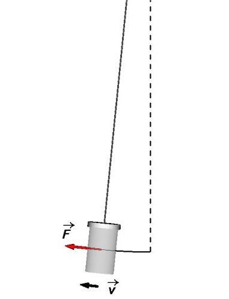
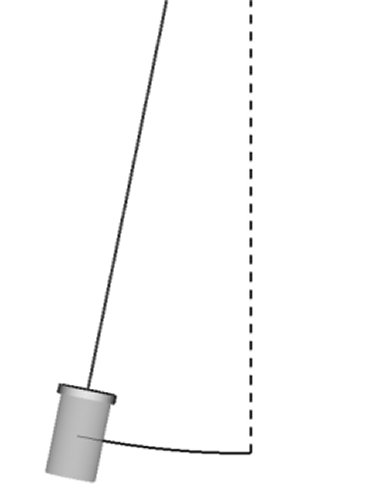
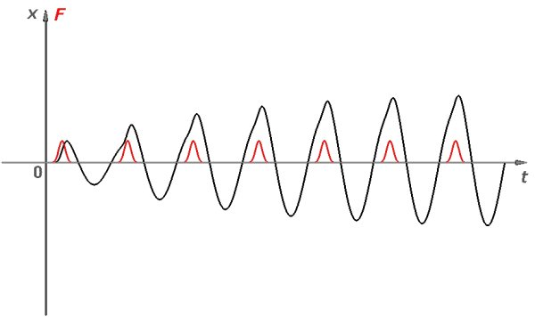
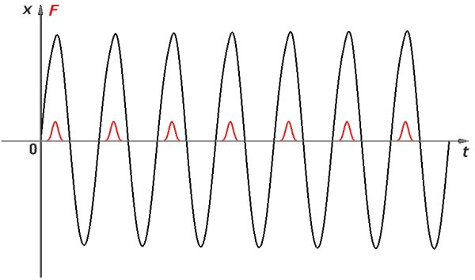
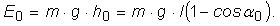
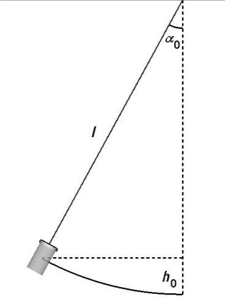
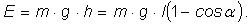

Provocarea 1B4−1
Provocarea 1B4−1
Cum reuşesc oare cei care îi însoţesc pe copii, să pună şi să menţină în mişcare leagănele, minute în şir, fără prea mult efort?
B.4. |
Oscilaţii întreţinute |
Leagănele sunt nelipsite din parcurile pentru copii. Copiii pur şi simplu le adoră. Dar leagănele nu au vreun motor − nu se mişcă "singure"!
Provocarea 1B4−1
Cum reuşesc oare cei care îi însoţesc pe copii, să pună şi să menţină în mişcare leagănele, minute în şir, fără prea mult efort?
Un leagăn în care se află un copil este asemnea unui pendul gravitaţional. Chiar şi o împingere iniţială mică scoate pendulul din poziţia verticală de echilibru, punându−l în mişcare cu o anumită viteză (figura 1B4−1).
|  | Fig. 1B4-1. O forţă de împingere tangenţială scoate pendulul din poziţia de echilibru şi îi impirmă acestuia viteză. |
Datorită interţiei, pendulul îşi va continua mişcarea (chiar şi foarte puţin) şi după ce forţa de împingere şi−a încheiat acţiunea (figura 1B4−2)!
|  | Fig. 1B4-2. Pendulul îşi continuă mişcarea, chiar după încetarea forţei de împingere. |
Astfel, amplitudinea de oscilaţie este, la început, chiar mai mare decât distanţa pe care a acţionat forţa de împingere. Dacă amortizarea este slabă, amplitudinea de oscilaţie scade lent, pendulul putând efectua multe oscilaţii până la oprire.
După o perioadă de oscilaţie, pendulul ajunge din nou într−o poziţie favorabilă, din care poate fi din nou împins, mărindu−i suplimentar amplitudinea.
Astfel, dacă energia transferată pendulului prin împingeri scurte, la momente favorabile, este mai mare decât cea necesară pentru a compensa amortizarea, amplitudinea de oscilaţie continuă să crească (figura 1B4−3).

Fig. 1B4-3. Împingeri scurte, la momente favorabile, conduc la creşterea amplitudinii de oscilaţie.
Amplitudinea creşte până când energia furnizată pendulului la fiecare oscilaţie compensează exact energia pe care o transferă pendulul mediului (datorită amortizării).
De aici încolo, oscilaţiile se menţin la această amplitudine, atâta timp cât pendulului i se furnizează aceeaşi cantitate de energie, la fiecare oscilaţie (figura 1B4−4).

Fig. 1B4-4. Amplitudinea rămâne constantă atâta timp cât oscilatorului i se furnizează, la fiecare oscilaţie, suficientă energie pentru compensarea amortizării.
 Numim oscilaţii întreţinute oscilaţiile care sunt menţinute cu amplitudine constantă, prin compensarea amortizării.
Numim oscilaţii întreţinute oscilaţiile care sunt menţinute cu amplitudine constantă, prin compensarea amortizării.
Astfel, cei care îi însoţesc pe copii în parcurile de joacă, pot să pună în oscilaţie leagănele şi să le menţină în oscilaţie, minute în şir, fără prea mult efort.
 Activitatea experimentală 1B4−1
Activitatea experimentală 1B4−1
Măsoară puterea medie necesară menţinerii în oscilaţie a unui pendul. Lucrează în echipă.
Pasul 1 Desprindeţi pendulul inferir (şi raportorul său) din pendulul dublu cu raportoare pe care l−ai realizat la activitatea experimentală 1B3−2 din secţiunea precedentă.
Pasul 2 Puneţi pendulul în oscilaţie cu amplitudinea unghiulară 110 şi măsuraţi intervalul de timp în care amplitudinea unghiulară se reduce, datorită amortizării, de la 100 la 90.
Pasul 3 Calculaţi câtă energie ar trebui furnizată pendulului în acest interval de timp, pentru a compensa amortizarea.
Pasul 4 Estimaţi puterea medie care ar trebui furnizată pendulului pentru a−i întreţine oscilaţiile cu o amplitudine constantă, în intervalul 90...100.
Când pendulul se află la elongaţia maximă a0, energia sa de oscilaţie este în întregime sub formă de energie potenţială gravitaţională faţă de poziţia de echilibru (figura 1B4−5):


Fig. 1B4-5. Calculul energiei de oscilaţie a unui pendul gravitaţional.
Mai târziu, când elongaţia maximă scade la a (datorită amortizării), energia de oscilaţie a pendulului este:

Aşadar, modificarea energiei de oscilaţie a pendulului în acest interval de timp este:
Pentru un pendul cu masa 0,1 kg şi lungimea 0,4 m, modificarea energiei de oscilaţie pentru o modificare a amplitudinii unghiulare de la 100 la 90 este de ordinul unei miimi de joule!
Această modificare a energiei de oscilaţie are loc într−un interval de timp de ordinul minutului, astfel că, puterea medie necesară întreţinerii oscilaţiilor pendulului este de ordinul 10-5 W (doar zece milionimi de watt!). O putere surprinzător de mică, care ar putea fi furnizată fără dificultate.
Provocarea 1B4−2
Cu cât trebuie să coboare un corp cu masa 1 kg pentru a furniza pendulului analizat suficientă energie pentru a−i întreţine acestuia oscilaţiile pe durata unei săptămâni?